Acredito que toda marca tem um propósito.
Quero encontrar o seu e te posicionar de acordo com ele. Vamos lá?
Presença digital e posicionamento único para marcas que também são únicas.
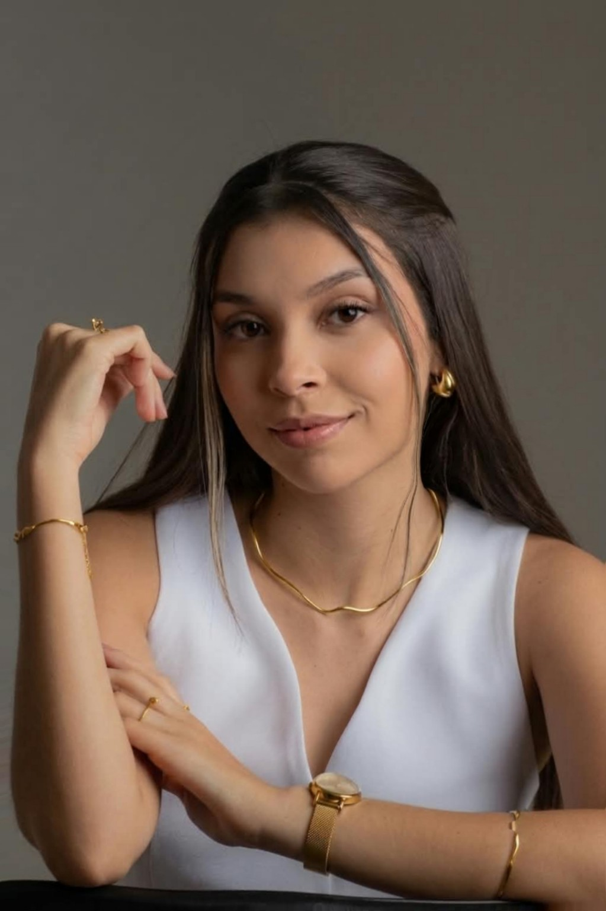
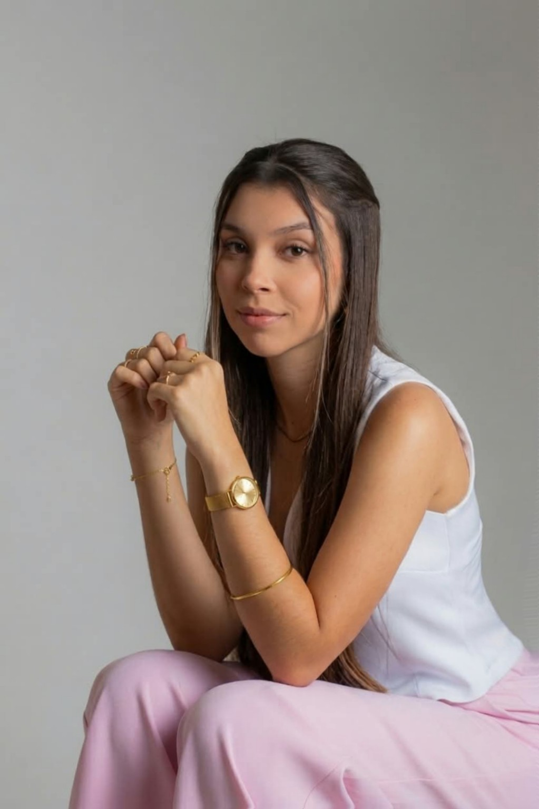
Uma curiosa e inventiva por trás de uma marca
Gosto de observar detalhes, encontrar histórias e entender o que faz uma marca ser percebida de um jeito único. É daí que nasce meu olhar para posicionamento, conteúdo e presença digital.
Marcas não precisam apenas aparecer. Elas precisam ser reconhecidas.
Antes de pensar no que publicar, busco entender quem é a marca, o que ela quer comunicar e para quem ela quer ser lembrada.
Dedetizadora Marcondes
um projeto pensado para transformar conhecimento técnico em uma comunicação mais clara, profissional e relevante para o público do nosso cliente.
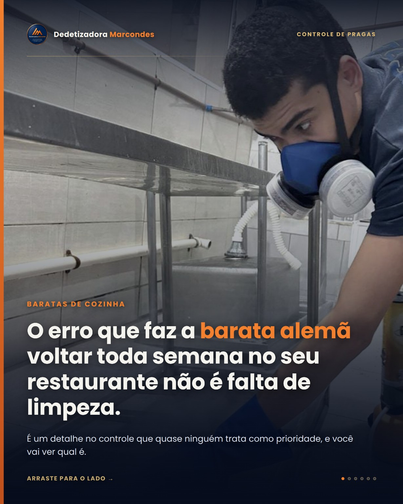
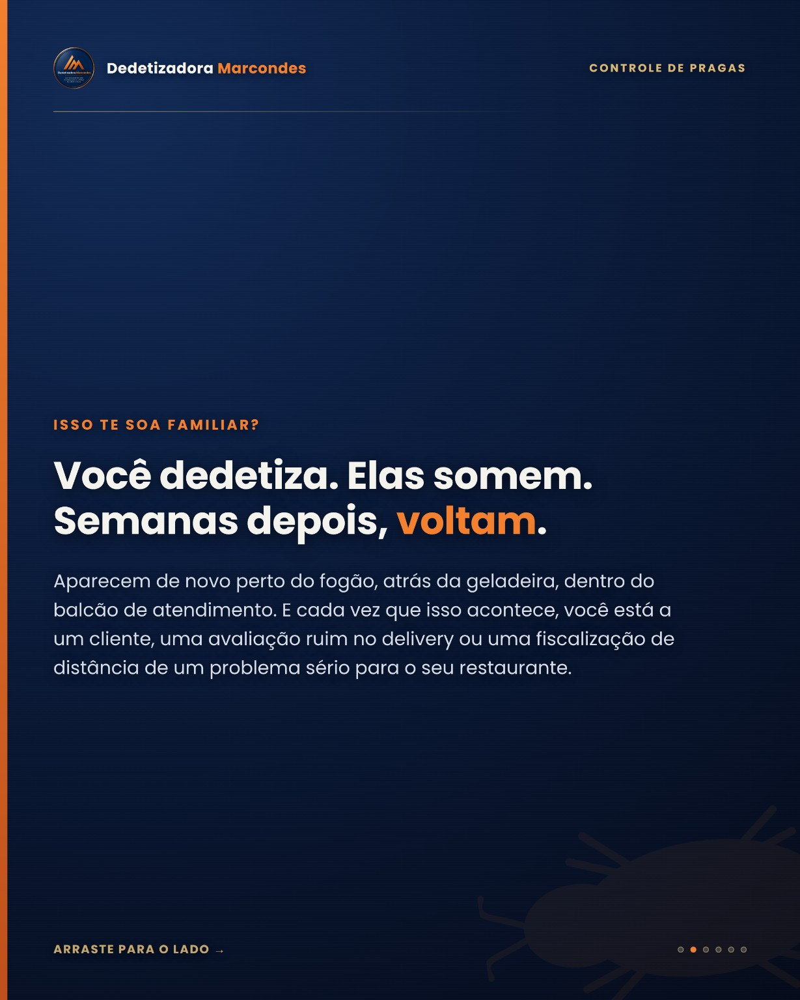
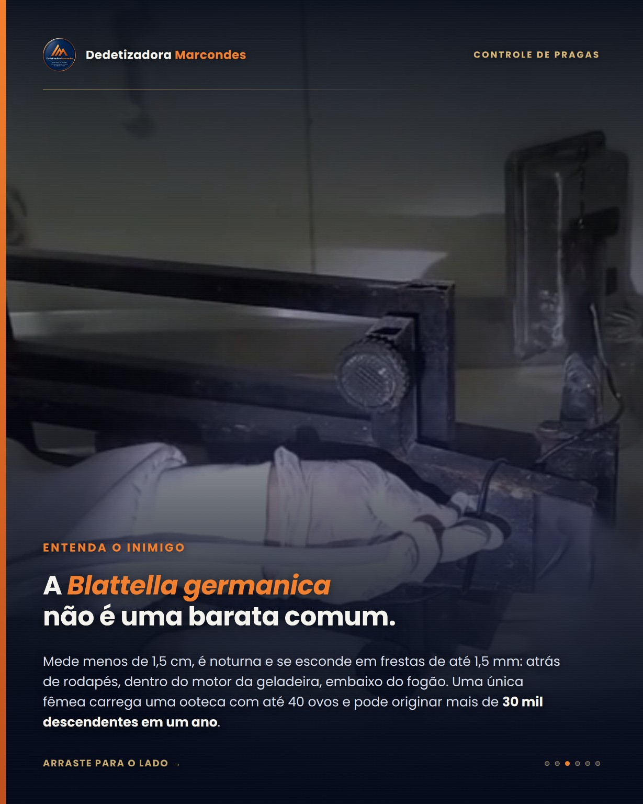
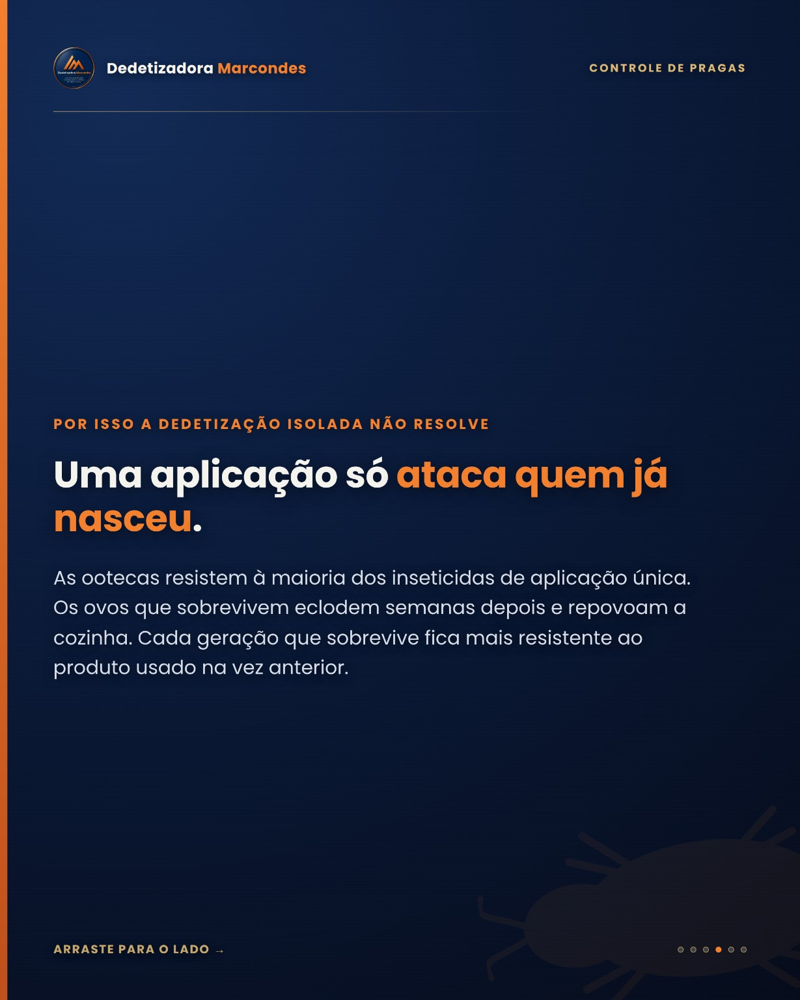
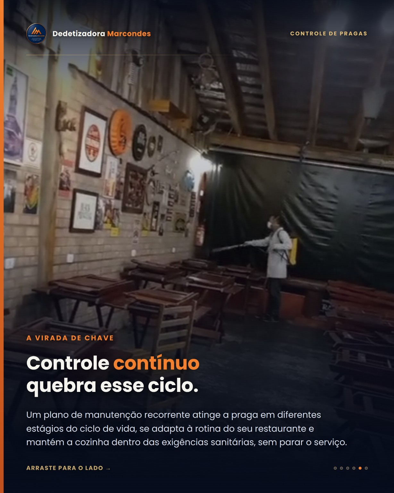

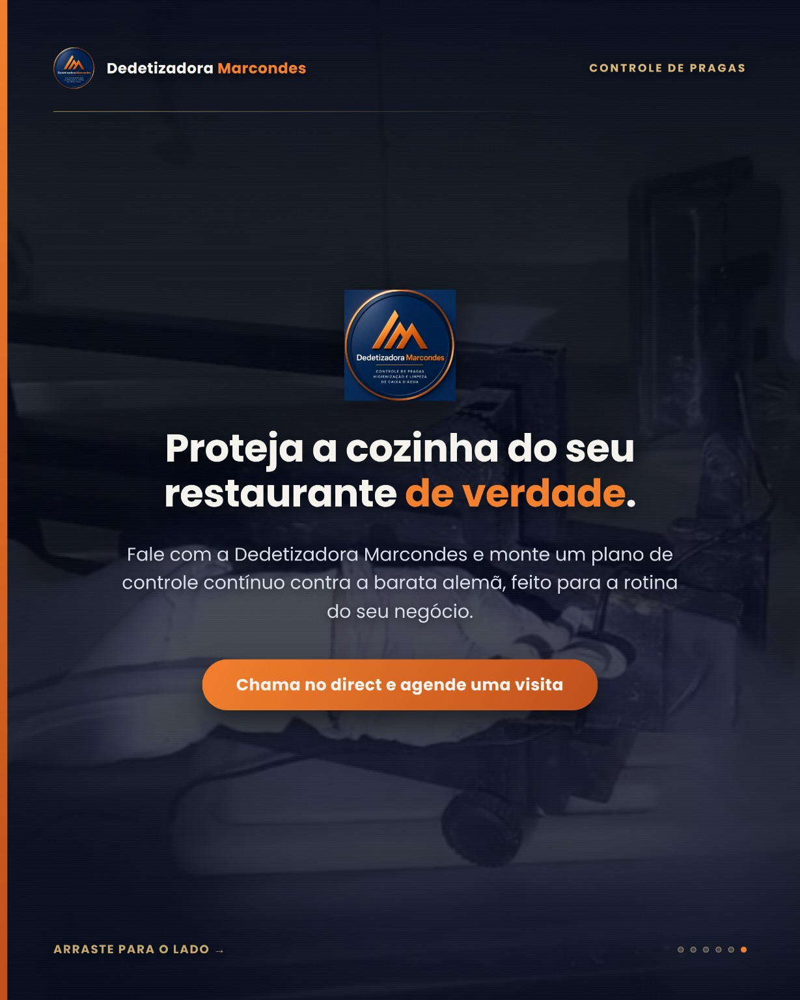
Informação que chama atenção
Conteúdos educativos com linguagem direta, identidade visual consistente e foco em situações reais do cliente.
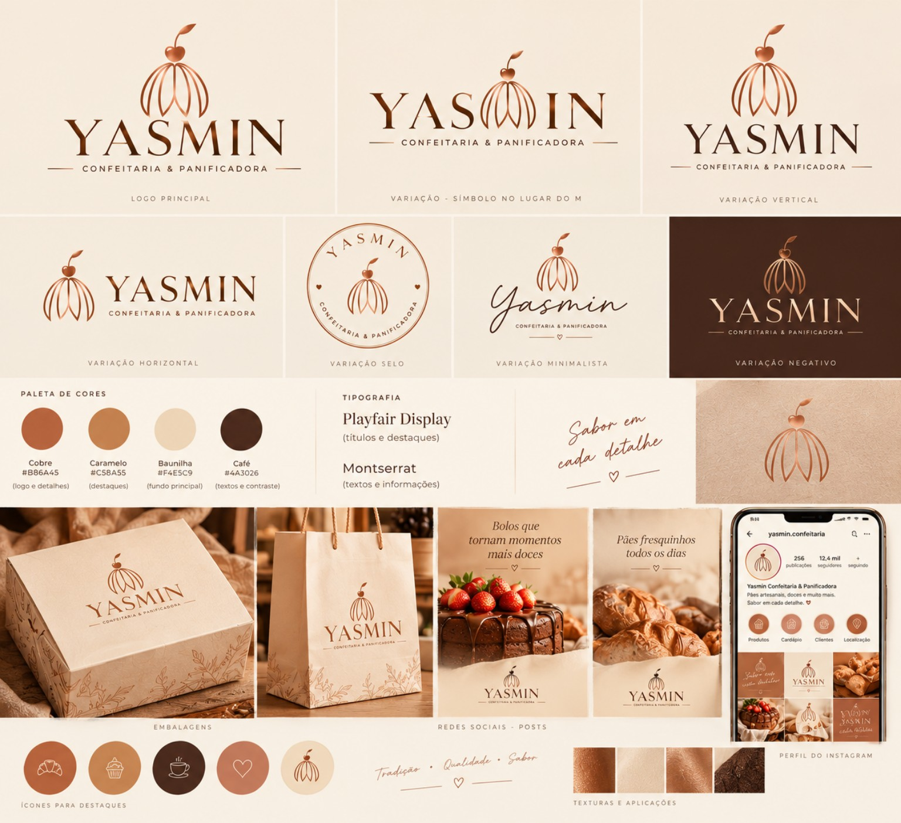
Uma marca que ganhou uma nova identidade.
Criação da nova identidade visual para Yasmin Confeitaria & Panificadora, reposicionando a antiga Yasmin Bolos & Pães com um nome e uma presença visual mais alinhados à nova fase da marca.
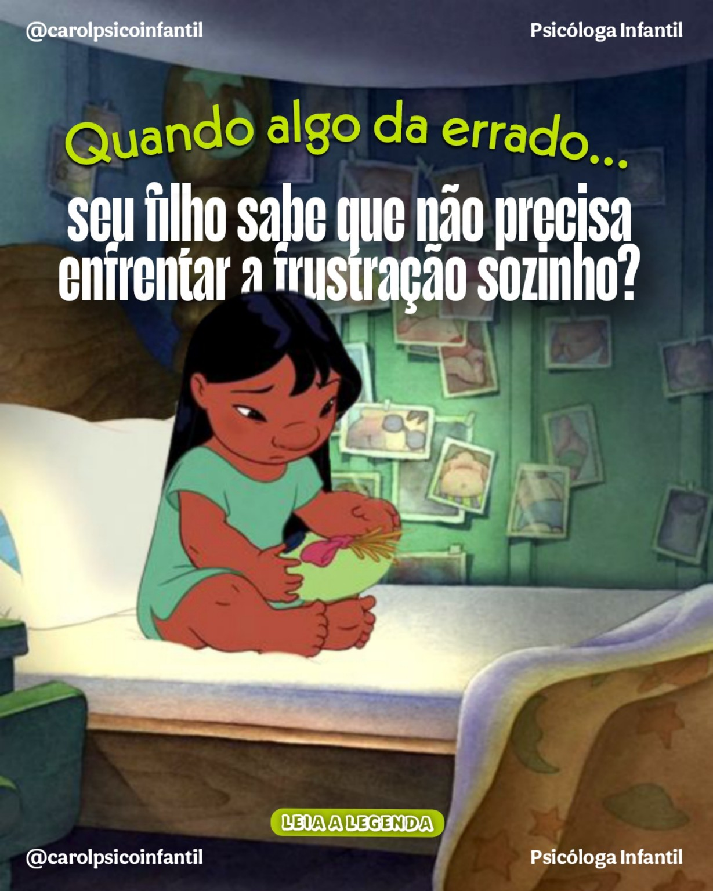
Conteúdo que prende a atenção do público.
Gerenciamento de redes sociais para a Psicóloga Infantil Doutora Carol, com conteúdos pensados estrategicamente para despertar identificação, curiosidade e conexão com os pais.
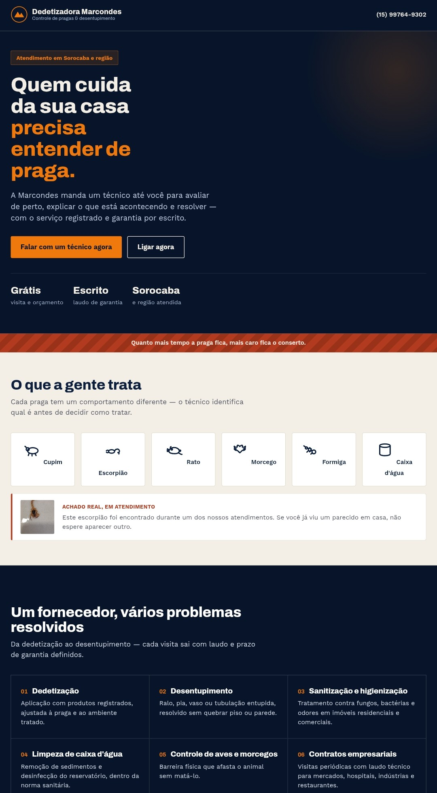
Gestão de tráfego pago para o seu negócio.
Anúncios estratégicos levando a pessoa certa para uma página pensada para converter: quem está procurando o seu serviço encontra a sua marca e chega direto ao seu WhatsApp. Como neste projeto, que ganhou uma landing page própria para apresentar os serviços e gerar contato.
ver site do projeto →Meu trabalho vai além de criar conteúdos bonitos. Busco entender a marca, encontrar sua voz e o que quer comunicar, e transformar sua presença digital em algo reconhecível e relevante.
Vamos tirar sua marca do comum?
Marketing com estratégia, personalidade e propósito.